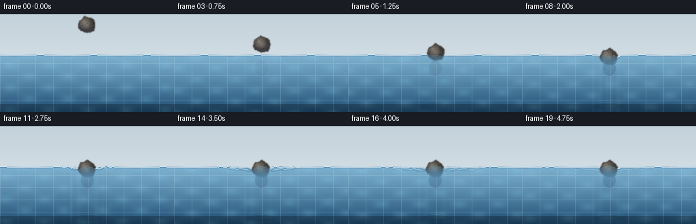
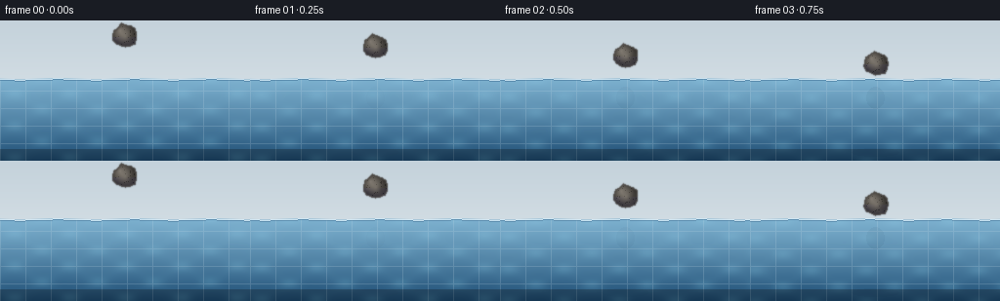

CODING AGENTS AS PIXEL WORLD MODELS
traex/Seed-2.1-Pro-0915 · phygen_007
点击播放 · 原生 RGB 像素
逐轮保存的候选
回放视频、检查图与代码变化。
每份候选均可单独播放。实际图片检查记录在下方工具轨迹中。
候选 01播放与检查图
点击播放 · 原生 RGB 像素


展开代码变化
--- 上一保存版本
+++ 本次保存版本
@@ -0,0 +1,254 @@
+"""Text-to-video: a stone is gently placed on the surface of a pool of water.
+
+Pure numpy/PIL renderer. 20 frames, 256x144, 4 fps. Side-view pool with a
+slowly descending rock, contact meniscus, expanding damped ripple rings and
+surface waves, underwater refraction tint and faint caustics.
+"""
+
+import os
+
+import numpy as np
+from PIL import Image, ImageDraw, ImageFilter
+
+import artifact_io
+
+W, H = 256, 144
+N, FPS = 20, 4.0
+CONTACT = 8 # frame at which the stone first touches the water
+YS = 60.0 # resting water surface y
+CX = 128.0 # horizontal centre of the action
+ROCK_R = 13.0
+
+rng = np.random.RandomState(21)
+
+# ---------------------------------------------------------------- palette
+BG_TOP = np.array([196, 210, 219], float)
+BG_BOT = np.array([226, 233, 237], float)
+WATER_TOP = np.array([104, 166, 202], float)
+WATER_BOT = np.array([22, 70, 110], float)
+RIPPLE_HI = np.array([223, 241, 251], float)
+RIPPLE_LO = np.array([40, 88, 126], float)
+ROCK_BASE = np.array([0.50, 0.475, 0.44], float)
+
+XX, YY = np.meshgrid(np.arange(W), np.arange(H))
+
+# Fixed rocky silhouette: irregular polygon points (unit radius).
+ANG = np.linspace(0, 2 * np.pi, 15, endpoint=False)
+RAD = 0.88 + 0.2 * rng.rand(15)
+RAD[0] = RAD[-1] if False else RAD[0]
+PX = np.cos(ANG) * RAD
+PY = np.sin(ANG) * RAD
+
+# Fixed fine texture for the rock (smoothed noise + dark speckles).
+tex = rng.rand(32, 32)
+tex_img = Image.fromarray((tex * 255).astype(np.uint8)).filter(ImageFilter.GaussianBlur(1.4))
+TEX = np.asarray(tex_img, float) / 255.0 - 0.5
+speckles = rng.rand(32, 32) < 0.05
+
+
+def rock_pose(i):
+ """Stone centre (x, y) and rotation angle at frame i."""
+ p = min(i / CONTACT, 1.0)
+ eased = 1 - (1 - p) ** 2 # gentle ease-out descent
+ cy_end = YS + 3.0 # slightly embedded at contact
+ cy = 16.0 + (cy_end - 16.0) * eased
+ cx = CX + 1.6 * np.sin(p * np.pi)
+ theta = -0.18 + 0.36 * p
+ if i > CONTACT:
+ age = (i - CONTACT) / FPS
+ cy += 1.4 * np.exp(-age * 2.2) * np.sin(age * 8.0)
+ theta += 0.05 * np.exp(-age * 2.0) * np.sin(age * 6.0)
+ return cx, cy, theta
+
+
+def surface_height(i):
+ """Per-column water surface y, including ambient bob, waves, meniscus."""
+ t = i / FPS
+ surf = np.full(W, YS)
+ surf += 0.55 * np.sin(np.arange(W) * 0.08 + t * 1.6)
+ if i >= CONTACT:
+ age = t - CONTACT / FPS
+ dx = np.arange(W) - CX
+ adx = np.abs(dx)
+ v = 34.0
+ front = np.exp(-((adx - v * age) / 11.0) ** 2)
+ wave = 2.6 * front * np.sin(adx * 0.55 - age * 6.2)
+ wave *= np.exp(-age * 0.75) * (adx < v * age + 14)
+ # meniscus: dip under the stone, raised lip at the contact line
+ r = ROCK_R
+ men = (2.4 * np.exp(-((adx - r) / 3.2) ** 2)
+ - 1.7 * np.exp(-(dx / (r * 0.75)) ** 2))
+ surf += wave + men
+ return surf
+
+
+def render_rock(cx, cy, theta, surf):
+ """RGBA layer with a shaded irregular stone."""
+ layer = Image.new("RGBA", (W, H), (0, 0, 0, 0))
+ mask = Image.new("L", (W, H), 0)
+ md = ImageDraw.Draw(mask)
+ ct, st = np.cos(theta), np.sin(theta)
+ pts = []
+ for u, v_ in zip(PX, PY):
+ rx = u * ct - v_ * st
+ ry = u * st + v_ * ct
+ pts.append((cx + rx * ROCK_R, cy + ry * ROCK_R))
+ md.polygon([(x, y) for x, y in pts], fill=255)
+ mask = mask.filter(ImageFilter.GaussianBlur(0.7))
+ alpha = np.asarray(mask, float) / 255.0
+ m = alpha > 0.02
+
+ dxn = (XX - cx) / ROCK_R
+ dyn = (YY - cy) / ROCK_R
+ light = np.clip(1 - np.sqrt((dxn + 0.42) ** 2 + (dyn + 0.46) ** 2), 0, 1)
+ n = np.clip(np.sqrt(dxn ** 2 + dyn ** 2), 0, 1.25)
+ shade = 0.72 + 0.48 * light - 0.34 * n
+
+ gx = np.clip(((XX - (cx - ROCK_R)) / (2 * ROCK_R) * 32).astype(int), 0, 31)
+ gy = np.clip(((YY - (cy - ROCK_R)) / (2 * ROCK_R) * 32).astype(int), 0, 31)
+ grain = TEX[gy, gx] * 0.16
+ dark = speckles[gy, gx] * 0.18
+ col = ROCK_BASE[None, None, :] * (shade + grain - dark)[..., None]
+ col[..., 2] += 0.05 * n * (dyn > 0) # cool bounce light below
+ col = np.clip(col, 0, 1)
+
+ out = np.zeros((H, W, 4), float)
+ out[..., :3] = col * 255
+ # dark outline from eroded alpha
+ eroded = np.asarray(mask.filter(ImageFilter.MinFilter(3)), float) / 255.0
+ edge = np.clip(alpha - eroded, 0, 1) * m
+ out[..., :3] *= (1 - edge[..., None])
+ out[..., :3] += edge[..., None] * np.array([74, 70, 66.0])
+ out[..., 3] = alpha * 255
+ layer = Image.fromarray(out.astype(np.uint8), "RGBA")
+ return layer, alpha
+
+
+def ripple_overlay(i, surf):
+ """Expanding ripple rings, clipped to the water and away from the stone."""
+ img = Image.new("RGBA", (W, H), (0, 0, 0, 0))
+ if i < CONTACT:
+ return img
+ d = ImageDraw.Draw(img)
+ age = (i - CONTACT) / FPS
+ v = 34.0
+ for k, emit in enumerate(np.arange(0, 1.6, 0.45)):
+ local = age - emit
+ if local <= 0.06:
+ continue
+ rx = v * local
+ if rx > 128:
+ continue
+ life = 2.6 - k * 0.25
+ a = max(0.0, 1 - local / life) * (0.85 - k * 0.12)
+ ry = 3.0 + rx * 0.035
+ x0, x1 = CX - rx, CX + rx
+ y0, y1 = YS - ry, YS + ry
+ hi = tuple(int(c) for c in RIPPLE_HI) + (int(255 * a),)
+ lo = tuple(int(c) for c in RIPPLE_LO) + (int(255 * a * 0.6),)
+ d.ellipse((x0, y0, x1, y1), outline=hi, width=1)
+ d.ellipse((x0, y0 + 1.4, x1, y1 + 1.4), outline=lo, width=1)
+ # mask: keep rings on the water and outside the stone's footprint
+ arr = np.asarray(img).copy()
+ ring_alpha = arr[..., 3] > 0
+ keep = (YY >= (surf[None, :] - 1)) & (np.abs(XX - CX) > ROCK_R * 1.05)
+ arr[..., 3] = np.where(ring_alpha & keep, arr[..., 3], 0)
+ return Image.fromarray(arr, "RGBA")
+
+
+def droplets(i):
+ """A couple of tiny, gentle droplets just after contact."""
+ img = Image.new("RGBA", (W, H), (0, 0, 0, 0))
+ if i < CONTACT or i > CONTACT + 3:
+ return img
+ d = ImageDraw.Draw(img)
+ dt = (i - CONTACT) / FPS
+ for side, delay in ((-1, 0.0), (1, 0.08), (-1, 0.16)):
+ tt = dt - delay
+ if tt < 0:
+ continue
+ x = CX + side * (6 + 26 * tt)
+ y = YS - (9 * tt - 55 * tt * tt)
+ if y < YS - 1:
+ r = 1.2
+ d.ellipse((x - r, y - r, x + r, y + r),
+ fill=(226, 242, 251, 190))
+ return img
+
+
+def render_frame(i):
+ t = i / FPS
+ surf = surface_height(i)
+
+ # --- background gradient (air above the pool)
+ fy = YY / (H - 1)
+ frame = BG_TOP[None, None, :] * (1 - fy[..., None]) + BG_BOT[None, None, :] * fy[..., None]
+
+ # --- water body
+ depth = np.clip((YY - surf[None, :]) / (H - YS), 0, 1)
+ water = WATER_TOP[None, None, :] * (1 - depth[..., None]) + WATER_BOT[None, None, :] * depth[..., None]
+ # slow caustic shimmer
+ ca = (np.sin(XX * 0.11 + t * 1.4) * np.sin(YY * 0.19 - t * 1.1) + 1) * 0.5
+ water += (ca ** 3)[..., None] * np.array([14, 18, 16.0]) * (0.4 + depth)[..., None]
+ # faint tile grid
+ tile = ((XX % 26 == 0) | (YY % 18 == 0)) & (YY > surf[None, :])
+ water[tile] = water[tile] * 0.82 + np.array([210, 228, 238.0]) * 0.18
+ # darker pool floor band
+ floor = YY > H - 13
+ water[floor] *= 0.72
+
+ cov = np.clip((YY - surf[None, :] + 1.5) / 2.0, 0, 1)
+ alpha_w = (0.8 + 0.17 * depth) * cov
+ frame = frame * (1 - alpha_w[..., None]) + water * alpha_w[..., None]
+
+ # --- surface highlight and its darker lower edge
+ sx = np.arange(W)
+ sy = np.round(surf).astype(int)
+ valid = (sy >= 0) & (sy < H)
+ frame[sy[valid], sx[valid]] = (frame[sy[valid], sx[valid]] * 0.25
+ + RIPPLE_HI * 0.75)
+ sy2 = np.clip(sy + 1, 0, H - 1)
+ frame[sy2[valid], sx[valid]] = (frame[sy2[valid], sx[valid]] * 0.6
+ + RIPPLE_LO * 0.4)
+
+ base = Image.fromarray(np.clip(frame, 0, 255).astype(np.uint8), "RGB").convert("RGBA")
+
+ # --- faint reflection / shadow in the water under the stone
+ refl = Image.new("RGBA", (W, H), (0, 0, 0, 0))
+ rd = ImageDraw.Draw(refl)
+ contact_p = min(i / CONTACT, 1.0)
+ rd.ellipse((CX - 9, YS + 8, CX + 9, YS + 30),
+ fill=(18, 48, 74, int(38 * contact_p)))
+ rd.ellipse((CX - 24, H - 13, CX + 24, H - 5),
+ fill=(10, 32, 52, int(34 * contact_p)))
+ base = Image.alpha_composite(base, refl)
+
+ # --- stone, then blue refraction tint on its submerged part
+ cx, cy, theta = rock_pose(i)
+ rock, rock_a = render_rock(cx, cy, theta, surf)
+ base = Image.alpha_composite(base, rock)
+ f = np.asarray(base, float)
+ submerged = (rock_a > 0.05) & (YY > surf[None, :])
+ sub_depth = np.clip((YY - surf[None, :]) / 26.0, 0, 0.55)
+ tint = (0.25 + sub_depth)[..., None]
+ wc = WATER_TOP[None, None, :] * (1 - depth[..., None]) + WATER_BOT[None, None, :] * depth[..., None]
+ f[..., :3] = np.where(submerged[..., None],
+ f[..., :3] * (1 - tint) + wc * tint,
+ f[..., :3])
+ base = Image.fromarray(np.clip(f, 0, 255).astype(np.uint8), "RGBA")
+
+ # --- ripples and droplets
+ base = Image.alpha_composite(base, ripple_overlay(i, surf))
+ base = Image.alpha_composite(base, droplets(i))
+ return np.asarray(base.convert("RGB"), np.uint8)
+
+
+def main():
+ frames = np.stack([render_frame(i) for i in range(N)], axis=0)
+ assert frames.shape == (N, H, W, 3) and frames.dtype == np.uint8
+ artifact_io.save(frames, os.getcwd())
+ print("saved", frames.shape, "to", os.getcwd())
+
+
+if __name__ == "__main__":
+ main()
可观测工具轨迹
实际执行的命令与返回图片。
命令 1exit 0
/bin/bash -lc 'cat prompt.txt; echo "==== RULES ===="; cat GENERATION_RULES.md; echo "==== SPEC ===="; cat task_spec.json; echo "==== LS ===="; ls -la'
命令 2exit 0
/bin/bash -lc 'cat artifact_io.py; echo "==== TEMPLATE ===="; head -50 player_template.html'
命令 3exit 1
/bin/bash -lc 'cd . && python generate.py && ls -la frames | head -25'
命令 4exit 0
/bin/bash -lc 'cd . && python generate.py && ls frames | head && ls -la pixels.npz index.html inspection.png'
保存候选 1 份；完成命令 4 次；可验证图片返回 0 张。原始 API 响应与完整日志保留在本地。